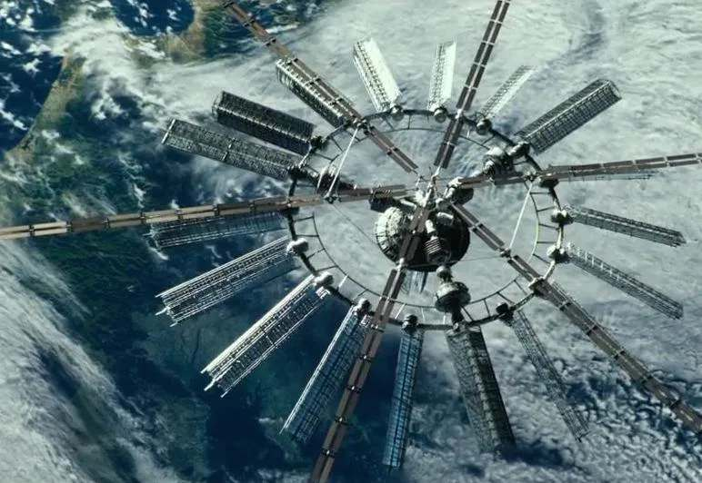
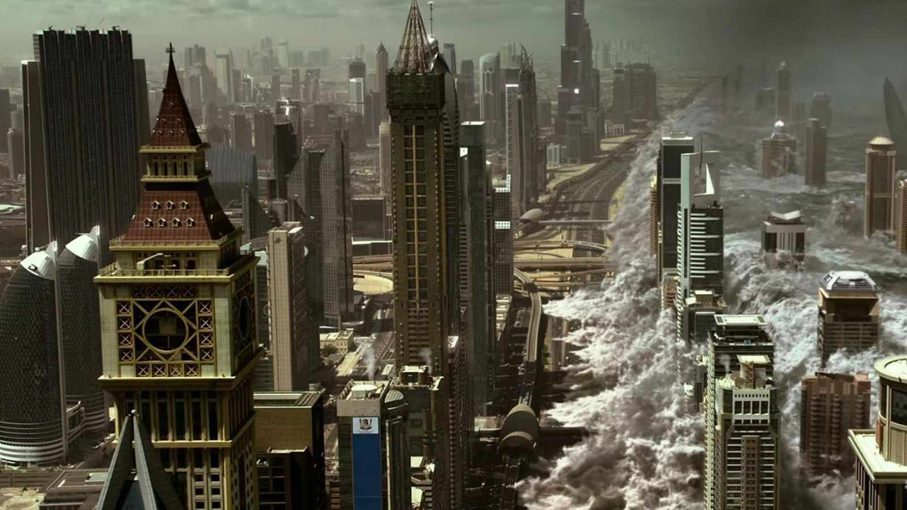
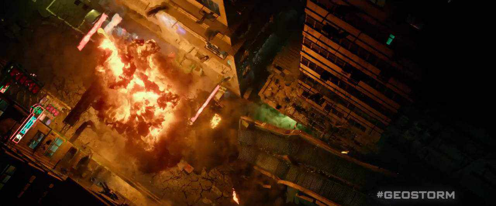
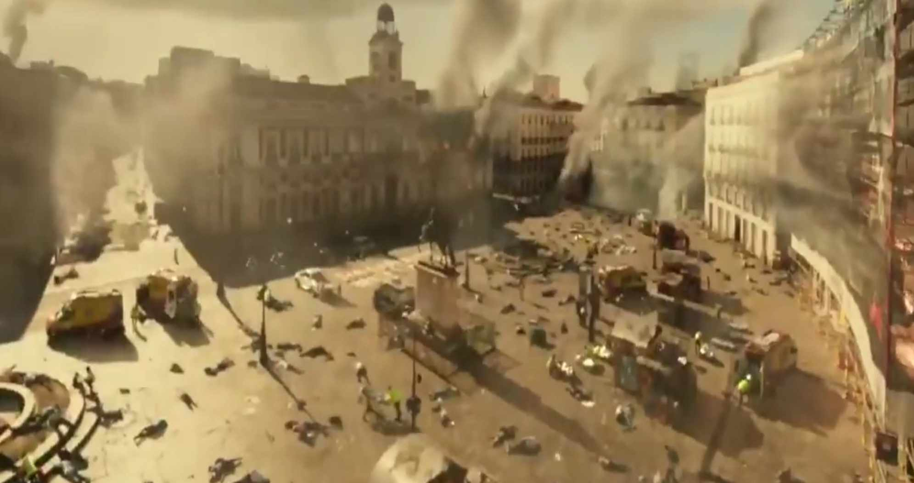
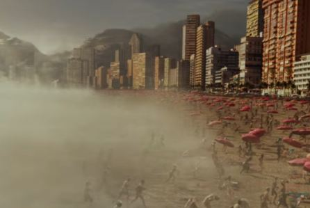

Introduction
Imagine a world where humanity controls the weather, to avert natural disasters and etc. with an advanced tech called “Dutch Boy” which was made my Jake Lawson. This concept forms the heart of Geostorm, a 2017 science fiction disaster film directed by Dean Devlin with a budget of 120-130$ Million but lost about 71.6$ million for Warner Bros. The movie explores the consequences of such power, blending high-stakes drama with stunning visuals.
About the Movie
Geostorm a sci-fi disaster film, set in the near-future world plagued by extreme climate events, envisioning humanity’s response to these crises. The Internation Coalition create a network of satellites called “Dutch Boy” designed to control the weather. Until it malfunctions, instead of preventing, it begins unleashing them, threatening the planet and humanity. Starring Gerard Butler as Jacob Lawson, the rebellious scientist who built Dutch Boy. He is joined by Jim Sturgess as Max, his politically skilled younger brother. Other notable cast members include Abbie Cornish, Andy Garcia, and Ed Harris. With a production budget of $120 million, the movie promised state-of-the-art visuals and thrilling action sequences.
Summary
As the movie begins, it starts with Hannah, narrating multiple disasters happening and as the increasing danger of the climate and natural disaster becoming more apparent an international committed started work on “Dutch Boy” which is a network of satellites combatting the weather and climate, which was led by Jake. But soon after he is called by a US Committee in which they state “Dutch Boy” in three years’ time is to be handed over to an International Committee. after he is shortly replaced by his brother Max. Three years later, a group of UN soldiers discover in Afghanistan a village which is entirely frozen including the people, and more accidents start popping up more and more. Soon after Jake is called back to investigate and help, soon after he finds out that the malfunctions are not accidents but a part of a conspiracy to weaponize “Dutch Boy”, as the threat emerges, Jake and Max must set their differences to work together to save the planet.
Review
Geostorm excels in depicting of large-scale destruction, offering stunning visuals of tidal waves, and etc. These are undeniably its strongest aspect. However, the film struggles with its storytelling, and characters. The plot, while interesting in concept, feels rushed and predictable, relying on clichés. The characters, especially Jake and Max, lack depth, and their sibling rivalry is not compelling enough to carry the emotional weight of the story. The dialogue often leans into melodrama, detracting from the film’s intensity. It does attempt to explore relevant themes albeit poorly, such as climate change and international cooperation. As they are ultimately surface level and remain superficial with the movie choosing to focus on its spectacle over making anything of substance.
Closing
Geostorm while visually spectacular is narratively flawed. While it won’t join the ranks of genre-defining classics, it does provide plenty of exciting action for those willing to overlook its flaws. If you’re in the mood for a cinematic thrill ride through climate chaos and don’t care much about quality then Geostorm is worth a watch for you.
My 5 Plot Points In GeoStorm
The film introduces a network of satellites designed to control the Earth's climate, preventing natural disasters.
A massive tsunami destroys Dubai
Fire Tornado, Gas Pipelines Explosion in Hongkong,China.
With the global warmup, Madrid got attacked by an extreme heat wave, killing over 2 million habitants of the city in only one day.
The freezing cold-front moving onshore in Rio de Janeiro,Brazil.